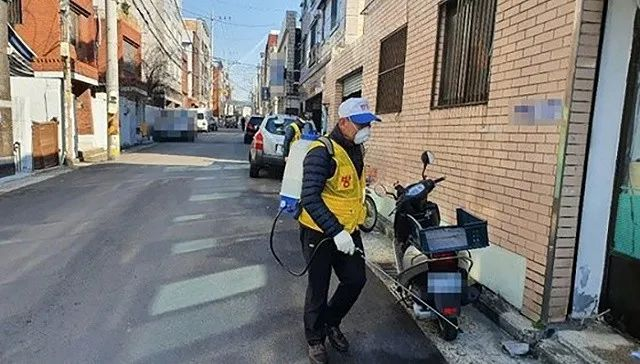
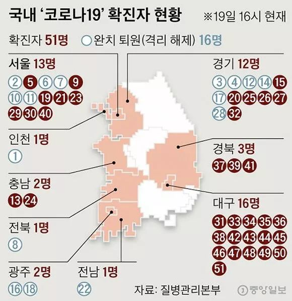
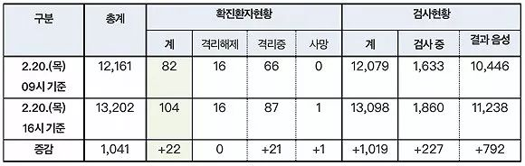

韩国一日新增15例累计确诊46例，多例感染源不明传播风险增大
原文链接 备份链接 首尔国立大学医院 来源：Wikicommons 记者：潘金花 “ 疫情时隔一周再度爆发，尤其是接连出现了多例感染路径尚不明确的病例，已引起了韩国卫生部门的高度警惕。 ” 在历经了一周的疫情平台期后，韩国本周再次迎来了新 …
2月19日，韩国大邱市疑似出现超级传播事件的教堂附近，工作人员正在消毒。来源：中央日报
记者：潘金花
“
大邱市一药店店员表示，MERS时期大邱没有出现确诊病例，人们并没有感到特别担心，但这次大家就像“打仗一样”，非常紧张。
”
韩国中央防疫对策本部2月20日通报，截至当天下午4时，韩国再新增22例新冠病毒感染病例，累计确诊病例达104例，且出现了首例死亡病例。
韩国中央应急处置本部副本部长金刚立20日表示，新型冠状病毒疫情超出防疫网，已开始在韩国社区全面扩散。
金刚立表示，综合考虑流行病学调查结果，中央应急处置本部和中央防疫对策本部判断新冠病毒感染的疫情非常严重。近期感染途径不明的确诊病例在首尔、大邱等地区剧增，疫情已从海外流入进入社区传播阶段。
金刚立表示，在此情况下，政府正在升级防疫应对体系，继续加大检疫力度严防病毒从海外流入，还计划在确诊病例集中的大邱新设8个病毒筛查诊所，并再安排24名公共卫生医师。

来源：中央日报
截至当地时间19日下午4时，韩国51例确诊病例的地区分布如上。左侧从上往下为，首尔13例，仁川1例，忠清南道2例，全罗北道1例，光州2例，全罗南道1例；右侧为，京畿道12例，庆尚北道3例，大邱16例。
在截至20日下午新增的22例病例中，有21例来自庆尚北道和大邱市，1例来自首尔。其中，有5人与第31例（61岁韩国女性）病例常去的教堂（新天地耶稣教会）有关。
而在当天上午新增的31例病例中，也有30例来自庆尚北道和大邱市，1例来自首尔。其中，有23人与第31例病例常去的教堂有关。由此，与第31例有关的确诊病例增至至少42例，庆尚北道和大邱市累计确诊70例。
据韩联社报道，第31例患者7日首次出现发冷、咽喉痛等症状，从当天起至18日确诊前一直在某医院接受住院治疗，该医院的一名工作人员也确诊感染。该患者还在出现相关症状的9日、16日以及出现症状前2次，共4次前往教堂。
韩国中央防疫对策本部长郑银敬19日表示，卫生部门认为第31例病例去过的教堂内发生了超级传播事件，可能有很多人与病例接触，卫生部门正在制定对整个教堂进行筛检试验和诊断试验的计划。
大邱是首尔、釜山、仁川之外的韩国第四大城市。综合路透社与美联社报道，大邱市长权泳臻已呼吁该市250万居民不要外出。
郑银敬则表示，已从新天地教会获取了本月9日和16日与第31例病例一起进行礼拜的1001人的名单，正在对这些人员采取居家隔离措施，并通过电话确认这些人员是否出现症状。
根据大邱市政府发布的情况，截至20日上午，在这1001人中，已有90人表示出现了感染症状，另有515人称未有不适，其余396人尚未取得联系。

图为新天地教会举行的礼拜活动，人员十分密集。来源：读者提供给《韩国日报》的照片
据《中央日报》报道，自昨日起，大邱市多个地区的人流就已开始明显下降，涉事教堂所在的建筑已禁止出入，附近的金融机构、邮局、医院及药店也基本都张贴了“禁止非办理业务者/有感冒症状者入内”的告示，平时人流量很大的胡同在下午几乎看不到人影，教堂附近的住宅区也已展开了紧急防疫消毒工作。
昨日下午从教堂附近大邱地铁1号线大明站出站的市民中，九成都戴着口罩，当地居民表示，截至前一日，戴口罩的人还只有三四成左右。而从昨日起，教堂附近一些药店的口罩及手部消毒液等基本已全部售罄，化妆品店的口罩也已售罄。
19日，教堂附近药店的门上贴着“口罩已售罄”的告示。来源：中央日报
大邱市其他地区的药店也是同样的光景。《中央日报》称，如大邱中区德善洞的某药店，在19日上午一开门就迎来了大批的顾客，200多个口罩三小时就卖完了，20多个体温计也被抢购一空。店员表示，MERS时期大邱没有出现确诊病例，人们并没有感到特别担心，但这次大家就像“打仗一样”，非常紧张。
与大邱·庆北地区几乎同属一个城市圈的釜山·庆南地区的气氛也很紧张。如今，该地区的一些公司已开始集体采购口罩，要求外出的员工佩戴。公共建筑物和企业楼房的门口，也基本都摆上了手部消毒液和消毒喷雾。
庆南政府相关人士表示，由于两地之间有铁路、公路连通，人员来往较为频繁，所以人们非常警惕，政府正在制定更进一步的防疫方案，计划对公交车和铁路交通等进行消毒，最大限度切断外部传染源。
韩国中央防疫对策本部已表示将进一步扩大新冠病毒检测对象的范围。该部20日发布了新冠病毒疫情应对指南第六版，对疑似病例适用了新的病例定义，有相关接触史并出现疑似症状者、不需要住院治疗但原因不明的轻度肺炎患者、以及医生判断认为的疑似感染者均纳入其中。
另外，确诊病例的接触者在接受隔离后的解除隔离标准也有所提高。今后即使没有异常症状，这些接触者都需在隔离第13天时接受病毒检测，只有检测结果呈阴性才可解除隔离。
截至20日下午4时，除确诊患者外，韩国接受新冠病毒检测的人数为13098人，其中11238人的结果呈阴性，还有1860人的结果尚未出炉。

来源：韩国中央防疫对策本部
韩国传染病专家们认为，新冠病毒感染的肺炎的死亡率高于甲型流感，低于中东呼吸综合征（MERS）。
韩国新型传染病中央临床委员会20日在记者会上已提醒高龄或有基础疾病的病例可能会出现临床重症。该委员会推测，新冠病例初期感染阶段病毒复制活跃，无症状或轻症患者在确诊前的活动可能形成社区传播。
该委员会已呼吁政府着手研制新冠疫苗和治疗药物，并表示当前疫情很可能转入社区传播阶段，需要整改行政、防疫、医疗体系，最大限度地有效运用公共卫生资源。
韩国国会保健福祉委员会20日已召开全体会议，表决通过了旨在应对疫情的三项法案，具体包括《关于预防及管理传染病法律》《检疫法》《医疗法》的修订案。这些修订案经法制司法委员会审批后，最快将在月内提交国会全体会议处理。
根据《关于预防及管理传染病法律》修订案，若传染病预警级别高于“注意”，政府将为易感染群体提供口罩等物资，在指定期间可禁止口罩和手部消毒液出口，医务人员和药剂师开处方和配制药物时将有义务确认患者的海外旅行史。
根据《检疫法》修订案，保健福祉部长官可要求法务部长官禁止来自疫区或疫情风险地区的外国人入境。《医疗法》修订案规定，医疗机构将新建传染病监控系统，加强对患者、监护人及医务人员的防控工作。

原文链接 备份链接 首尔国立大学医院 来源：Wikicommons 记者：潘金花 “ 疫情时隔一周再度爆发，尤其是接连出现了多例感染路径尚不明确的病例，已引起了韩国卫生部门的高度警惕。 ” 在历经了一周的疫情平台期后，韩国本周再次迎来了新 …
原文链接 备份链接 图/法新 文 | 徐进 是的！好转迹象就藏在数据更新中。据国家和湖北省卫健委公布的数据，截止到2月5日24时，有关数据分析如下： 1、新增确诊病例数由陡增转为下降 其中湖北新增确诊病例数结束连续一周的“步步高”由升转降 …
原文链接 备份链接 所有的鱼现在同步在 allthefishnews.wordpress.com 更新并可通过邮件订阅。你可以复制上方链接浏览器打开获取订阅链接。 *点击 阅读原文 可查看昨天的推送 根据丁香医生实时数据，截至 2 …
原文链接 备份链接 岛语 非常时期，武汉成了全国人民挂念、祈福的城市。封城后，武汉人民的真实生活是什么样？ 武汉在发生哪些变化？ 正和岛自1月26日起特别推出“叶青专栏”。叶青是一位定居武汉40年的市民，也是一名学者和官员。在过往多期的专 …
原文链接 备份链接 【财新网】（记者 黄蕙昭 综合）距离1月20日晚钟南山院士宣布病毒“肯定人传人”已近一月，湖北内外氛围有别：疫情核心区武汉，新冠疫情仍处于胶着对垒状态，从2月16日起，武汉市启动三天拉网式大排查，誓将底数摸清，把握疫情 …